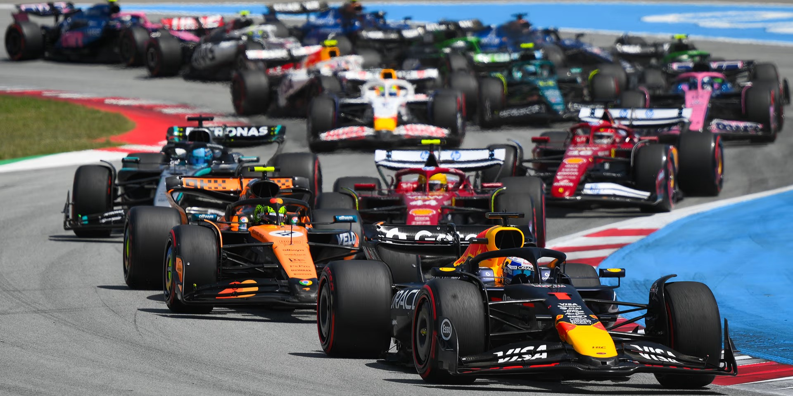

Ismerje meg a Forma-1
különleges világát!
A Formula 1 az együléses autóversenyzés nemzetközi sorozatának legmagasabb osztálya, a motorport csúcsa és a világ legnagyobb autóverseny-sorozata. A pilóták az egyéni világbajnoki címért küzdenek, míg a csapatok a konstruktőri bajnokságban versenyeznek.

A mezőny jelenleg 11 csapatból és 22 versenyzőből áll, minden csapat két versenyzőt indít. A tapasztalt világbajnokok együtt versenyeznek újoncokkal, valamint új belépők is jelen vannak a történelmi csapatok közt.
A szezon során a versenyeket világszerte rendezik, különböző kontinenseken. Klasszikus pályák, mint Monza Circuit vagy Suzuka Circuit, modern helyszínekkel egészülnek ki. Egy idény akár 24 futamból is állhat, változatos kihívásokat kínálva.
A Forma-1-es autók rendkívül fejlett, hibrid meghajtású gépek. A modern erőforrások egy belső égésű motorból és elektromos rendszerekből állnak. Az aerodinamika kulcsszerepet játszik, hiszen az autók leszorítóerő segítségével tapadnak az aszfalthoz. A szabályok folyamatosan változnak, hogy a sport fejlődjön és fenntarthatóbbá váljon.